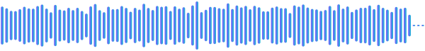
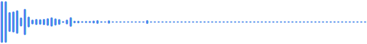
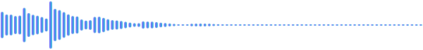
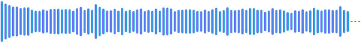
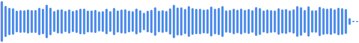

Lo-fi cafe
Lo-fi hip-hop chill track with mellow electric piano, soft vinyl crackle, low-pass filtered drums and soft plucked bass for a relaxed, dreamy vibe
Download MP3Every sample below was generated on an M1 Mac by Audio Studio MCP with the Stable Audio 3 medium model, using the prompt and seed shown. Nothing was mixed or edited by hand. Pass the same prompt and seed to generate_audio to get the same file.
Full instrumental tracks from one sentence.
Lo-fi hip-hop chill track with mellow electric piano, soft vinyl crackle, low-pass filtered drums and soft plucked bass for a relaxed, dreamy vibe
Download MP3Epic cinematic orchestral trailer music with thundering taiko drums, soaring French horns and driving string ostinato, heroic and intense
Download MP3
Upbeat 8-bit chiptune adventure theme with a bright square wave lead, bubbly arpeggiated bass and crisp noise drums, playful and energetic
Download MP3Light-hearted casual acoustic pop instrumental with bouncy ukulele strums, a playful glockenspiel melody, soft hand claps and gentle upright bass, sunny and carefree
Download MP3Described by source, action, material and space.

source glass bottle · action shattering on impact, fragments scattering · material thick green glass, sharp bright transient · space concrete floor, close-up, dry
Download MP3source old wooden door · action slowly creaking open with long squeaky hinge groans, then a soft thud · material dry aged oak, rusty iron hinges · space small dry room, close mic
Download MP3source sci-fi laser gun · action single quick shot, sharp attack with a fast descending pitch zap · material bright electric zap, synthetic · space dry, close-up
Download MP3source heavy rain and distant thunder · action steady downpour with a slow rolling thunder rumble · material dense water droplets on leaves and roof · space outdoor forest at night, wide stereo
Download MP3
source game coin pickup · action quick bright two-note chime · material sparkly metallic bell tone · space dry, close-up
Download MP3process_audio crossfades the tail into the head for a seamless loop.
Drum loop with deep muffled kick on beat one, snappy rimshot snare on beats two and four, and tight closed hi-hats
edit_audio extends a track or re-imagines it in another style.

Synthwave track with warm analog pads, punchy gated drums and a shimmering arpeggiated lead, nostalgic and driving
Download MP3
Synthwave track with warm analog pads, punchy gated drums and a shimmering arpeggiated lead, building to a soaring outro
Lo-fi hip-hop chill track with mellow electric piano, soft vinyl crackle, low-pass filtered drums and soft plucked bass for a relaxed, dreamy vibe
Download MP3Bossa nova jazz version with nylon guitar, brushed drums and upright bass, warm and relaxed